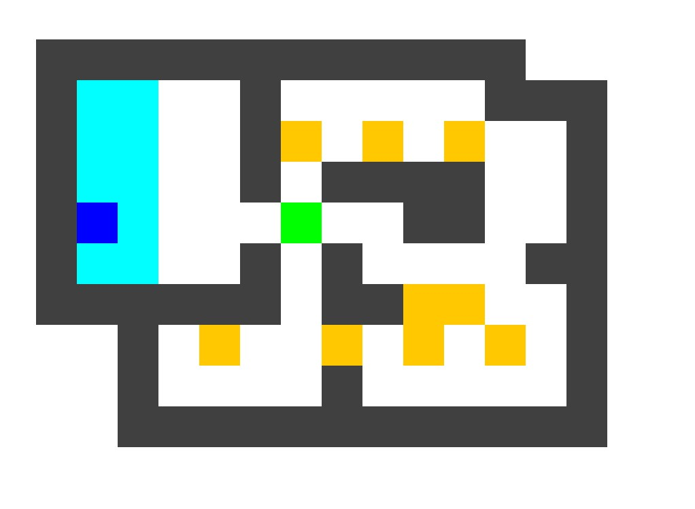
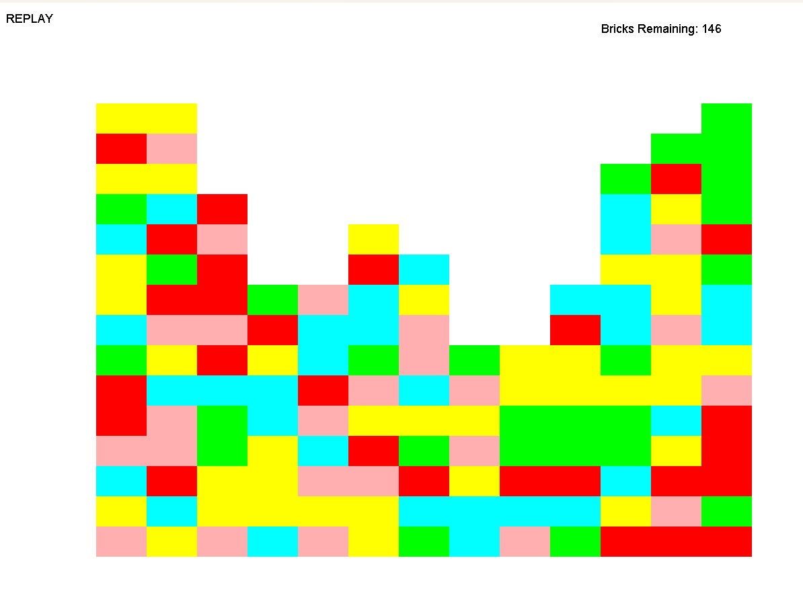

Alex Dickey's Arcade Suite
About
Contact
Experience
Personal
Tetris
The classic 1985 puzzle video game, constructed with features such as high-score, fall speed, and a cool line clearing effect!
Sokoban
A fully functioning game of Sokoban in which the user (green) must push the containers (yellow) into the designated area (light blue). The user is
also able to modify and create their own levels.

Destructo
Also known as Same Game, the obvective of this game is to eliminate clusters of two or more blocks of the same color. When no more eliminatations are able to be made,
the game is over. The user is able to adjust the difficulty and keep track of high score.

BrickBreaker
Made popular on the blackberry mobile device, brickbreaker is a personal favorite. This game is made functioning with a reset button, level difficulty, and adjustable ball speed.
Snake
A playable game of Snake, the user must eat the green squares in order to grow their snake. The user loses if they hit the border or if they 'eat' themselves.